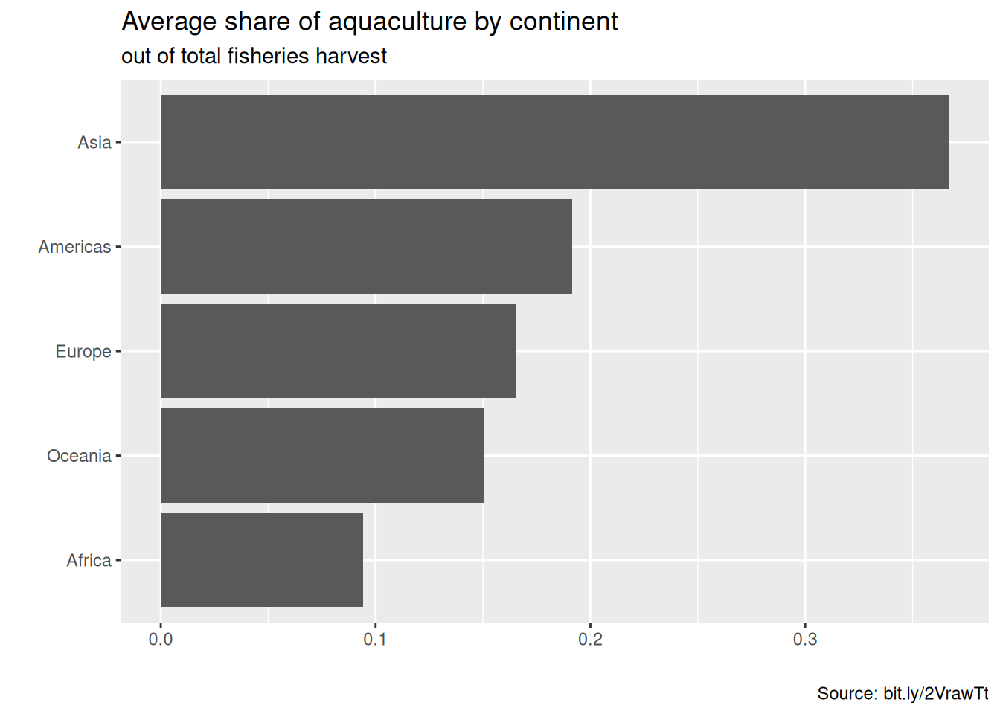

In this module, we consider transformation of data. In general raw data may be messy and need to be structured in a tidy way. Tidying your data means storing it in a structured form suitable for analysis. This is done using a tibble (data frame) where each column is a variable, and each row is an observation. Tidy data is important because the consistent structure lets you focus your struggle on questions about the data.
Given a raw dataset the first step is to clean it and and transform it to a tidy format. Given tidy data, you next often need to transform it. Transformation includes narrowing in on observations of interest (e.g. only observations from a specific year or warehouse), creating new variables based on existing variables (like the cost of using the machine that day given idle time). Together, tidying and transforming are called wrangling, because it can be a hard process to get your data in the right form.
In this chapter, you will learn how to work with tibbles using the dplyr package which is a part of the tidyverse.
A template project for this module is given on Posit Cloud (open it and use it while reading the notes).
Learning path diagram
It is recommended that you follow the green learning path; however, you may like a different learning style. In the learning path diagram, there are links to alternative online content (video or reading). Note this is an alternative to the standard learning path that you may use instead (you should not do both). The learning path may also have extra content, that is NOT a part of syllabus (only look at it if you want more info)!
13.1 Learning outcomes
By the end of this module, you are expected to be able to:
Describe what tidy and wangling is.
Apply the most common string functions.
Apply tidy operations to data.
Transform data.
Clean data.
The learning outcomes relate to the overall learning goals number 7, 11-14 and 18 of the course.
13.2 Working with data in the tidyverse
An excellent introduction on how to transform data using the tidyverse is given in the interactive DataCamp course Data Manipulation with dplyr. Please complete the course before continuing.
13.3 Mutating joins
Mutating joins allow you to combine variables from multiple tables. There are four types of mutating join, which differ in their behavior when a match is not found. We’ll illustrate each with a simple example:
df1 <-tibble(x =c(1, 2), y =2:1)df2 <-tibble(x =c(3, 1), a =10, b ="a")df1#> # A tibble: 2 × 2#> x y#> <dbl> <int>#> 1 1 2#> 2 2 1df2#> # A tibble: 2 × 3#> x a b #> <dbl> <dbl> <chr>#> 1 3 10 a #> 2 1 10 a
Note that column x is present in both tables and used when joining them.
inner_join(df1, df2) only includes observations that match in both df1 and df2.
df1 %>%inner_join(df2) #> # A tibble: 1 × 4#> x y a b #> <dbl> <int> <dbl> <chr>#> 1 1 2 10 a
left_join(df1, df2) includes all observations in df1, regardless of whether
they match or not. This is the most commonly used join because it ensures
that you don’t lose observations from your primary table.
df1 %>%left_join(df2)#> # A tibble: 2 × 4#> x y a b #> <dbl> <int> <dbl> <chr>#> 1 1 2 10 a #> 2 2 1 NA <NA>
right_join(df1, df2) includes all observations in df2. It’s equivalent to
left_join(df2, df1), but the columns and rows will be ordered differently.
df1 %>%right_join(df2)#> # A tibble: 2 × 4#> x y a b #> <dbl> <int> <dbl> <chr>#> 1 1 2 10 a #> 2 3 NA 10 adf2 %>%left_join(df1)#> # A tibble: 2 × 4#> x a b y#> <dbl> <dbl> <chr> <int>#> 1 3 10 a NA#> 2 1 10 a 2
full_join() includes all observations from df1 and df2.
df1 %>%full_join(df2)#> # A tibble: 3 × 4#> x y a b #> <dbl> <int> <dbl> <chr>#> 1 1 2 10 a #> 2 2 1 NA <NA> #> 3 3 NA 10 a
The left, right and full joins are collectively know as outer joins. When a row doesn’t match in an outer join, the new variables are filled in with missing values.
While mutating joins are primarily used to add new variables, they can also generate new observations. If a match is not unique, a join will add all possible combinations (the Cartesian product) of the matching observations:
df1 <-tibble(x =c(1, 1, 2), y =1:3)df2 <-tibble(x =c(1, 1, 2), z =c("a", "b", "a"))df1 %>%left_join(df2)#> # A tibble: 5 × 3#> x y z #> <dbl> <int> <chr>#> 1 1 1 a #> 2 1 1 b #> 3 1 2 a #> 4 1 2 b #> 5 2 3 a
Filtering joins match observations in the same way as mutating joins, but affect the observations, not the variables. There are two types:
semi_join(df1, df2)keeps all observations in df1 that have a match in df2.
anti_join(df1, df2)drops all observations in df1 that have a match in df2.
These are most useful for diagnosing join mismatches. If you’re worried about what observations your joins will match, start with a semi_join() or anti_join(). semi_join() and anti_join() never duplicate; they only remove observations.
df1 <-tibble(x =c(1, 1, 3, 4), y =1:4)df2 <-tibble(x =c(1, 1, 2), z =c("a", "b", "a"))# Four rows to start with:df1 %>%nrow()#> [1] 4# And we get four rows after the joindf1 %>%inner_join(df2, by ="x") %>%nrow()#> [1] 4# But only two rows actually matchdf1 %>%semi_join(df2, by ="x") %>%nrow()#> [1] 2
13.4 Recap
We consider transformation of tidy data where data are stored using a tibble (data frame) where each column is a variable, and each row is an observation/case.
Tidy data is important because the consistent structure lets you focus your struggle on questions about the data.
Transformation includes narrowing in on observations of interest (e.g. only observations from a specific year or warehouse), creating new variables based on existing variables (like the cost of using the machine that day given idle time).
Tidying and transforming are called wrangling, because it can be a hard process to get your data in the right form.
The package dplyr provides a consistent set of verbs that helps you solve the most common data manipulation challenges:
The filter function chooses rows (cases/observations) that meet a specific criteria.
The select function chooses columns (variables) based on their names.
The arrange function reorders the rows.
The transmute function adds/modifies columns (variables) and drops existing ones.
The mutate function adds/modifies columns (variables).
The group_by function groups variables for groupwise operations.
The ungroup function removes the current grouping.
The count function counts rows based on a grouping.
The summarise function reduces multiple values down to a single summary.
The distinct function selects unique/distinct rows.
The pull function can be used to extract columns as vectors (it is similar to $).
Some nice to know functions to use inside e.g. summarise or mutate are
The n() function counts the number of rows in a group.
The n_distinct counts the number of unique rows in a group.
The first function considers the first row in a group (remember to order it as needed).
The slice_min and slice_max functions select rows with highest or lowest values of a variable.
The across function makes it easy to apply the same transformation to multiple columns.
Use print(n = Inf) in a pipe to print all rows.
Use the pipe operator %>% to connect operations.
Use functions glimpse, tail, head, View to have a look at the data.
The skim function in the skimr package provides an approach to summary statistics.
Use as.character, as.numeric, etc. to convert data to a different type.
Use nrow and ncol functions to get the number of rows and columns of the data.
The ‘Data transformation with dplyr’ cheatsheet is very useful. Find the newest version in RStudio Help > Cheatsheets.
Below you will find a set of exercises. Always have a look at the exercises before you meet in your study group and try to solve them yourself. Are you stuck, see the help page. Some of the solutions to each exercise can be seen by pressing the button at each question. Beware, you will not learn by giving up too early. Put some effort into finding a solution! Always practice using shortcuts in RStudio (see Tools > Keyboard Shortcuts Help).
Go to the Tools for Analytics workspace and download/export the TM13 project. Open it on your laptop and have a look at the files in the exercises folder which can be used as a starting point.
13.5.1 Exercise (gapminder)
Use the exercise R markdown template to solve this exercise (File > New File > R Markdown…, select From template and then TFA Exercise).
The gapminder data set provides values for life expectancy, GDP per capita, and population, every five years, from 1952 to 2007 for 142 countries. The data can be loaded using the gapminder package:
library(gapminder)data(gapminder, package ="gapminder")gapminder#> # A tibble: 1,704 × 6#> country continent year lifeExp pop gdpPercap#> <fct> <fct> <int> <dbl> <int> <dbl>#> 1 Afghanistan Asia 1952 28.8 8425333 779.#> 2 Afghanistan Asia 1957 30.3 9240934 821.#> 3 Afghanistan Asia 1962 32.0 10267083 853.#> 4 Afghanistan Asia 1967 34.0 11537966 836.#> 5 Afghanistan Asia 1972 36.1 13079460 740.#> 6 Afghanistan Asia 1977 38.4 14880372 786.#> 7 Afghanistan Asia 1982 39.9 12881816 978.#> 8 Afghanistan Asia 1987 40.8 13867957 852.#> 9 Afghanistan Asia 1992 41.7 16317921 649.#> 10 Afghanistan Asia 1997 41.8 22227415 635.#> # ℹ 1,694 more rows
Let us try to examine the dataset (use pipes %>% as much as possible).
Solution
gapminder %>%glimpse()#> Rows: 1,704#> Columns: 6#> $ country <fct> "Afghanistan", "Afghanistan", "Afghanistan", "Afghanistan", "Afghanistan", "Afgh…#> $ continent <fct> Asia, Asia, Asia, Asia, Asia, Asia, Asia, Asia, Asia, Asia, Asia, Asia, Europe, …#> $ year <int> 1952, 1957, 1962, 1967, 1972, 1977, 1982, 1987, 1992, 1997, 2002, 2007, 1952, 19…#> $ lifeExp <dbl> 28.8, 30.3, 32.0, 34.0, 36.1, 38.4, 39.9, 40.8, 41.7, 41.8, 42.1, 43.8, 55.2, 59…#> $ pop <int> 8425333, 9240934, 10267083, 11537966, 13079460, 14880372, 12881816, 13867957, 16…#> $ gdpPercap <dbl> 779, 821, 853, 836, 740, 786, 978, 852, 649, 635, 727, 975, 1601, 1942, 2313, 27…gapminder %>%summary()#> country continent year lifeExp pop #> Afghanistan: 12 Africa :624 Min. :1952 Min. :23.6 Min. :6.00e+04 #> Albania : 12 Americas:300 1st Qu.:1966 1st Qu.:48.2 1st Qu.:2.79e+06 #> Algeria : 12 Asia :396 Median :1980 Median :60.7 Median :7.02e+06 #> Angola : 12 Europe :360 Mean :1980 Mean :59.5 Mean :2.96e+07 #> Argentina : 12 Oceania : 24 3rd Qu.:1993 3rd Qu.:70.8 3rd Qu.:1.96e+07 #> Australia : 12 Max. :2007 Max. :82.6 Max. :1.32e+09 #> (Other) :1632 #> gdpPercap #> Min. : 241 #> 1st Qu.: 1202 #> Median : 3532 #> Mean : 7215 #> 3rd Qu.: 9325 #> Max. :113523 #> gapminder %>%tail()#> # A tibble: 6 × 6#> country continent year lifeExp pop gdpPercap#> <fct> <fct> <int> <dbl> <int> <dbl>#> 1 Zimbabwe Africa 1982 60.4 7636524 789.#> 2 Zimbabwe Africa 1987 62.4 9216418 706.#> 3 Zimbabwe Africa 1992 60.4 10704340 693.#> 4 Zimbabwe Africa 1997 46.8 11404948 792.#> 5 Zimbabwe Africa 2002 40.0 11926563 672.#> 6 Zimbabwe Africa 2007 43.5 12311143 470.
Use glimpse, summary and tail to examine the data.
Use count to count the number of
Solution
gapminder %>%count(country) %>%nrow()#> [1] 142
a) countries,
Solution
gapminder %>%count(continent) %>%nrow()#> [1] 5
b) continents,
Solution
gapminder %>%count(continent, country) %>%count(continent) # or#> # A tibble: 5 × 2#> continent n#> <fct> <int>#> 1 Africa 52#> 2 Americas 25#> 3 Asia 33#> 4 Europe 30#> 5 Oceania 2gapminder %>%distinct(continent, country) %>%count(continent)#> # A tibble: 5 × 2#> continent n#> <fct> <int>#> 1 Africa 52#> 2 Americas 25#> 3 Asia 33#> 4 Europe 30#> 5 Oceania 2
The relative GDP per capita numbers are, in general, well below 1. We see that most of the countries covered by this dataset have substantially lower GDP per capita, relative to Denmark, across the entire time period.
First you must calculate the mean of Danish gdpPercap and next use that to add a new column gdpPercapRel.
Use mutate to calculate GDP per capita relative to mean GDP per capita in Denmark over the whole period (gdpPercap divided by the mean of Danish gdpPercap). Have a look at the calculated data. Does the numbers seem reasonable? I perceive Denmark to be a “high GDP” country, so I predict that the distribution of gdpPercapRel is located below 1, possibly even well below.
Use arrange to order
Solution
gapminder %>%arrange(year, country)#> # A tibble: 1,704 × 6#> country continent year lifeExp pop gdpPercap#> <fct> <fct> <int> <dbl> <int> <dbl>#> 1 Afghanistan Asia 1952 28.8 8425333 779.#> 2 Albania Europe 1952 55.2 1282697 1601.#> 3 Algeria Africa 1952 43.1 9279525 2449.#> 4 Angola Africa 1952 30.0 4232095 3521.#> 5 Argentina Americas 1952 62.5 17876956 5911.#> 6 Australia Oceania 1952 69.1 8691212 10040.#> 7 Austria Europe 1952 66.8 6927772 6137.#> 8 Bahrain Asia 1952 50.9 120447 9867.#> 9 Bangladesh Asia 1952 37.5 46886859 684.#> 10 Belgium Europe 1952 68 8730405 8343.#> # ℹ 1,694 more rows
a) data by year then country, as opposed to current by country then year,
Solution
gapminder %>%filter(year ==2007) %>%arrange(lifeExp)#> # A tibble: 142 × 6#> country continent year lifeExp pop gdpPercap#> <fct> <fct> <int> <dbl> <int> <dbl>#> 1 Swaziland Africa 2007 39.6 1133066 4513.#> 2 Mozambique Africa 2007 42.1 19951656 824.#> 3 Zambia Africa 2007 42.4 11746035 1271.#> 4 Sierra Leone Africa 2007 42.6 6144562 863.#> 5 Lesotho Africa 2007 42.6 2012649 1569.#> 6 Angola Africa 2007 42.7 12420476 4797.#> 7 Zimbabwe Africa 2007 43.5 12311143 470.#> 8 Afghanistan Asia 2007 43.8 31889923 975.#> 9 Central African Republic Africa 2007 44.7 4369038 706.#> 10 Liberia Africa 2007 45.7 3193942 415.#> # ℹ 132 more rows
b) data from 2007, sorted on life expectancy,
Solution
gapminder %>%filter(year ==2007) %>%arrange(desc(lifeExp))#> # A tibble: 142 × 6#> country continent year lifeExp pop gdpPercap#> <fct> <fct> <int> <dbl> <int> <dbl>#> 1 Japan Asia 2007 82.6 127467972 31656.#> 2 Hong Kong, China Asia 2007 82.2 6980412 39725.#> 3 Iceland Europe 2007 81.8 301931 36181.#> 4 Switzerland Europe 2007 81.7 7554661 37506.#> 5 Australia Oceania 2007 81.2 20434176 34435.#> 6 Spain Europe 2007 80.9 40448191 28821.#> 7 Sweden Europe 2007 80.9 9031088 33860.#> 8 Israel Asia 2007 80.7 6426679 25523.#> 9 France Europe 2007 80.7 61083916 30470.#> 10 Canada Americas 2007 80.7 33390141 36319.#> # ℹ 132 more rows
c) data from 2007, sorted on life expectancy in descending order. Hint: use desc() inside arrange.
Use select to
Solution
gapminder %>%select(yr = year, everything())#> # A tibble: 1,704 × 6#> yr country continent lifeExp pop gdpPercap#> <int> <fct> <fct> <dbl> <int> <dbl>#> 1 1952 Afghanistan Asia 28.8 8425333 779.#> 2 1957 Afghanistan Asia 30.3 9240934 821.#> 3 1962 Afghanistan Asia 32.0 10267083 853.#> 4 1967 Afghanistan Asia 34.0 11537966 836.#> 5 1972 Afghanistan Asia 36.1 13079460 740.#> 6 1977 Afghanistan Asia 38.4 14880372 786.#> 7 1982 Afghanistan Asia 39.9 12881816 978.#> 8 1987 Afghanistan Asia 40.8 13867957 852.#> 9 1992 Afghanistan Asia 41.7 16317921 649.#> 10 1997 Afghanistan Asia 41.8 22227415 635.#> # ℹ 1,694 more rows
a) rename year to yr and keep all other columns (the select helper everything may be used),
Solution
gapminder %>%select(-pop)#> # A tibble: 1,704 × 5#> country continent year lifeExp gdpPercap#> <fct> <fct> <int> <dbl> <dbl>#> 1 Afghanistan Asia 1952 28.8 779.#> 2 Afghanistan Asia 1957 30.3 821.#> 3 Afghanistan Asia 1962 32.0 853.#> 4 Afghanistan Asia 1967 34.0 836.#> 5 Afghanistan Asia 1972 36.1 740.#> 6 Afghanistan Asia 1977 38.4 786.#> 7 Afghanistan Asia 1982 39.9 978.#> 8 Afghanistan Asia 1987 40.8 852.#> 9 Afghanistan Asia 1992 41.7 649.#> 10 Afghanistan Asia 1997 41.8 635.#> # ℹ 1,694 more rows
b) remove pop,
Solution
gapminder %>%select(year, pop, everything())#> # A tibble: 1,704 × 6#> year pop country continent lifeExp gdpPercap#> <int> <int> <fct> <fct> <dbl> <dbl>#> 1 1952 8425333 Afghanistan Asia 28.8 779.#> 2 1957 9240934 Afghanistan Asia 30.3 821.#> 3 1962 10267083 Afghanistan Asia 32.0 853.#> 4 1967 11537966 Afghanistan Asia 34.0 836.#> 5 1972 13079460 Afghanistan Asia 36.1 740.#> 6 1977 14880372 Afghanistan Asia 38.4 786.#> 7 1982 12881816 Afghanistan Asia 39.9 978.#> 8 1987 13867957 Afghanistan Asia 40.8 852.#> 9 1992 16317921 Afghanistan Asia 41.7 649.#> 10 1997 22227415 Afghanistan Asia 41.8 635.#> # ℹ 1,694 more rows
c) reorder columns in order year, pop, … (remaining).
Use group_by and summarize to find the
Solution
gapminder %>%group_by(continent) %>%summarize(n =n())#> # A tibble: 5 × 2#> continent n#> <fct> <int>#> 1 Africa 624#> 2 Americas 300#> 3 Asia 396#> 4 Europe 360#> 5 Oceania 24
a) number of observations per continent,
Solution
gapminder %>%group_by(continent) %>%summarize(n =n(), n_countries =n_distinct(country))#> # A tibble: 5 × 3#> continent n n_countries#> <fct> <int> <int>#> 1 Africa 624 52#> 2 Americas 300 25#> 3 Asia 396 33#> 4 Europe 360 30#> 5 Oceania 24 2
b) number of countries per continent (use n_distinct inside summarize to count the number of distinct observations),
Solution
gapminder %>%group_by(continent) %>%summarize(avg_lifeExp =mean(lifeExp))#> # A tibble: 5 × 2#> continent avg_lifeExp#> <fct> <dbl>#> 1 Africa 48.9#> 2 Americas 64.7#> 3 Asia 60.1#> 4 Europe 71.9#> 5 Oceania 74.3
d) minimum and maximum life expectancies seen by year in Asia.
Solution
gapminder %>%group_by(country) %>%# group by countryselect(country, year, lifeExp) %>%# select relevant columnsarrange(year, .by_group =TRUE) %>%# make sure that data is sorted correctmutate(lifeExp_gain = lifeExp -first(lifeExp)) %>%filter(year <1963) # just for nice printing#> # A tibble: 426 × 4#> # Groups: country [142]#> country year lifeExp lifeExp_gain#> <fct> <int> <dbl> <dbl>#> 1 Afghanistan 1952 28.8 0 #> 2 Afghanistan 1957 30.3 1.53#> 3 Afghanistan 1962 32.0 3.20#> 4 Albania 1952 55.2 0 #> 5 Albania 1957 59.3 4.05#> 6 Albania 1962 64.8 9.59#> 7 Algeria 1952 43.1 0 #> 8 Algeria 1957 45.7 2.61#> 9 Algeria 1962 48.3 5.23#> 10 Angola 1952 30.0 0 #> # ℹ 416 more rows
Hint
gapminder %>%group_by(country) %>%# group by countryselect(country, year, lifeExp) %>%# select relevant columnsarrange(year, .by_group =TRUE) %>%# make sure that data is sorted correctmutate(lifeExp_gain = ___) %>%# define new variablefilter(year <1963) # just for nice printing
The first function may be helpful to extract the first value from a vector in each group.
Sometimes you do not want to collapse the \(n\) rows for each group into one row. That is, you do not want to use summarize but mutate within your groups. Try to make a new variable that is the years of life expectancy gained (lost) relative to 1952, for each individual country.
Solution
gapminder %>%select(country, year, continent, lifeExp) %>%group_by(continent, country) %>%mutate(le_delta = lifeExp -lag(lifeExp)) %>%summarize(worst_le_delta =min(le_delta, na.rm =TRUE)) %>%slice_min(worst_le_delta) %>%arrange(worst_le_delta)#> # A tibble: 5 × 3#> # Groups: continent [5]#> continent country worst_le_delta#> <fct> <fct> <dbl>#> 1 Africa Rwanda -20.4 #> 2 Asia Cambodia -9.10 #> 3 Americas El Salvador -1.51 #> 4 Europe Montenegro -1.46 #> 5 Oceania Australia 0.170
Mostly you are seeing what genocide looks like in dry statistics on average life expectancy.
Hint
gapminder %>%select(country, year, continent, lifeExp) %>%# select relevant columnsgroup_by(continent, country) %>%# groupmutate(le_delta = ___) %>%# within country, take (lifeExp in year i) - (lifeExp in year i - 1)summarize(worst_le_delta =min(___, na.rm =TRUE)) %>%# find lowest valueslice_min(worst_le_delta) %>%# find min in each continentarrange(worst_le_delta) # arrange
The lag function is useful to select the value in the previous row. Positive values of le_delta means lifeExp went up, negative means it went down. Break the code into pieces, starting at the top, and inspect the intermediate results. These commands are built up gradually, with lots of errors and refinements along the way.
Which country experienced the sharpest 5-year drop in life expectancy in each continent? Recall that the Gapminder data only has data every five years, e.g. for 1952, 1957, etc. So this really means looking at life expectancy changes between adjacent timepoints.
13.5.2 Exercise (babynames)
Use the exercise R markdown template to solve this exercise (File > New File > R Markdown…, select From template and then TFA Exercise).
The package babynames contains the dataset babynames provided by the U.S. Social Security Administration. For each year from 1880 to 2017, the number of children of each sex given each name. All names with more than 5 uses are given (source: http://www.ssa.gov/oact/babynames/limits.html).
Install it using
install.packages("babynames")
We will use the skimr package to get an overview over babynames:
library(babynames)library(skimr)skim(babynames)
Table 13.1: Data summary
Name
babynames
Number of rows
1924665
Number of columns
5
_______________________
Column type frequency:
character
2
numeric
3
________________________
Group variables
None
Variable type: character
skim_variable
n_missing
complete_rate
min
max
empty
n_unique
whitespace
sex
0
1
1
1
0
2
0
name
0
1
2
15
0
97310
0
Variable type: numeric
skim_variable
n_missing
complete_rate
mean
sd
p0
p25
p50
p75
p100
hist
year
0
1
1975
34
1880
1951
1985
2003
2017.00
▁▂▃▅▇
n
0
1
181
1533
5
7
12
32
99686.00
▇▁▁▁▁
prop
0
1
0
0
0
0
0
0
0.08
▇▁▁▁▁
Solution
The last line only selects the n column.
Which of these is NOT a way to select the name and n columns together?
babynames %>%filter(prop >=0.08)#> # A tibble: 3 × 5#> year sex name n prop#> <dbl> <chr> <chr> <int> <dbl>#> 1 1880 M John 9655 0.0815#> 2 1880 M William 9532 0.0805#> 3 1881 M John 8769 0.0810
a) all of the names where prop is greater than or equal to 0.08,
Solution
babynames %>%filter(name =="Sea")#> # A tibble: 4 × 5#> year sex name n prop#> <dbl> <chr> <chr> <int> <dbl>#> 1 1982 F Sea 5 0.00000276#> 2 1985 M Sea 6 0.00000312#> 3 1986 M Sea 5 0.0000026 #> 4 1998 F Sea 5 0.00000258
b) all of the children named “Sea”.
Use Boolean operators to return only the rows that contain:
Solution
babynames %>%filter(name =="Sue", sex =="M")#> # A tibble: 52 × 5#> year sex name n prop#> <dbl> <chr> <chr> <int> <dbl>#> 1 1917 M Sue 7 0.0000073 #> 2 1927 M Sue 5 0.0000043 #> 3 1928 M Sue 5 0.00000438#> 4 1930 M Sue 5 0.00000443#> 5 1931 M Sue 6 0.00000561#> 6 1932 M Sue 7 0.00000652#> 7 1933 M Sue 7 0.00000686#> 8 1934 M Sue 14 0.0000132 #> 9 1935 M Sue 13 0.0000122 #> 10 1936 M Sue 9 0.00000846#> # ℹ 42 more rows
a) boys named Sue,
Solution
babynames %>%filter(year ==1880, n ==5| n ==6)#> # A tibble: 455 × 5#> year sex name n prop#> <dbl> <chr> <chr> <int> <dbl>#> 1 1880 F Abby 6 0.0000615#> 2 1880 F Aileen 6 0.0000615#> 3 1880 F Alba 6 0.0000615#> 4 1880 F Alda 6 0.0000615#> 5 1880 F Alla 6 0.0000615#> 6 1880 F Alverta 6 0.0000615#> 7 1880 F Ara 6 0.0000615#> 8 1880 F Ardelia 6 0.0000615#> 9 1880 F Ardella 6 0.0000615#> 10 1880 F Arrie 6 0.0000615#> # ℹ 445 more rows
b) names that were used by exactly 5 or 6 children in 1880,
Solution
babynames %>%filter(name %in%c("Acura", "Lexus", "Yugo"))#> # A tibble: 57 × 5#> year sex name n prop#> <dbl> <chr> <chr> <int> <dbl>#> 1 1990 F Lexus 36 0.0000175 #> 2 1990 M Lexus 12 0.00000558#> 3 1991 F Lexus 102 0.0000502 #> 4 1991 M Lexus 16 0.00000755#> 5 1992 F Lexus 193 0.0000963 #> 6 1992 M Lexus 25 0.0000119 #> 7 1993 F Lexus 285 0.000145 #> 8 1993 M Lexus 30 0.0000145 #> 9 1994 F Lexus 381 0.000195 #> 10 1994 F Acura 6 0.00000308#> # ℹ 47 more rows
Write a sequence of functions that filters babynames to just the girls that were born in 2017, then select the name and n columns, then arrange the results so that the most popular names are near the top.
Solution
# for instancebabynames %>%filter(sex =="M", name =="Lars")#> # A tibble: 112 × 5#> year sex name n prop#> <dbl> <chr> <chr> <int> <dbl>#> 1 1883 M Lars 7 0.0000622#> 2 1884 M Lars 5 0.0000407#> 3 1886 M Lars 5 0.000042 #> 4 1887 M Lars 5 0.0000457#> 5 1897 M Lars 5 0.000041 #> 6 1901 M Lars 8 0.0000692#> 7 1912 M Lars 6 0.0000133#> 8 1913 M Lars 6 0.0000112#> 9 1914 M Lars 16 0.0000234#> 10 1915 M Lars 17 0.0000193#> # ℹ 102 more rows
Trim babynames to just the rows that contain your name and your sex.
Solution
babynames %>%filter(name =="Khaleesi") %>%summarise(total =sum(n), first =min(year))#> # A tibble: 1 × 2#> total first#> <int> <dbl>#> 1 1964 2011
Hint
babynames ___ filter(____) _______(total = ___, first = ___)
Extract the rows where name == "Khaleesi". Then use summarise() to find the total number of children named Khaleesi and the first year Khaleesi appeared in the data.
Solution
babynames %>%group_by(name, sex) %>%summarize(total =sum(n)) %>%arrange(desc(total))#> # A tibble: 107,973 × 3#> # Groups: name [97,310]#> name sex total#> <chr> <chr> <int>#> 1 James M 5150472#> 2 John M 5115466#> 3 Robert M 4814815#> 4 Michael M 4350824#> 5 Mary F 4123200#> 6 William M 4102604#> 7 David M 3611329#> 8 Joseph M 2603445#> 9 Richard M 2563082#> 10 Charles M 2386048#> # ℹ 107,963 more rows
Use group_by(), summarise(), and arrange() to display the ten most popular names. Compute popularity as the total number of children of a single gender given a name.
Use group_by() to calculate the total number of children born each year over time.
Solution
babynames %>%group_by(year, sex) %>%mutate(rank =min_rank(desc(n))) %>%arrange(year, sex, desc(prop))#> # A tibble: 1,924,665 × 6#> # Groups: year, sex [276]#> year sex name n prop rank#> <dbl> <chr> <chr> <int> <dbl> <int>#> 1 1880 F Mary 7065 0.0724 1#> 2 1880 F Anna 2604 0.0267 2#> 3 1880 F Emma 2003 0.0205 3#> 4 1880 F Elizabeth 1939 0.0199 4#> 5 1880 F Minnie 1746 0.0179 5#> 6 1880 F Margaret 1578 0.0162 6#> 7 1880 F Ida 1472 0.0151 7#> 8 1880 F Alice 1414 0.0145 8#> 9 1880 F Bertha 1320 0.0135 9#> 10 1880 F Sarah 1288 0.0132 10#> # ℹ 1,924,655 more rows
The same results if you use n since in the same order.
Column prop denotes the proportion given year and sex. Use mutate() and min_rank() to rank each row in babynames from largestprop to lowest prop given year and sex. What happens if you do the same using the n column?
Solution
babynames %>%group_by(year, sex) %>%mutate(rank =min_rank(desc(n))) %>%filter(rank ==1, year >2009)#> # A tibble: 16 × 6#> # Groups: year, sex [16]#> year sex name n prop rank#> <dbl> <chr> <chr> <int> <dbl> <int>#> 1 2010 F Isabella 22905 0.0117 1#> 2 2010 M Jacob 22117 0.0108 1#> 3 2011 F Sophia 21837 0.0113 1#> 4 2011 M Jacob 20365 0.0100 1#> 5 2012 F Sophia 22304 0.0115 1#> 6 2012 M Jacob 19069 0.00941 1#> 7 2013 F Sophia 21213 0.0110 1#> 8 2013 M Noah 18241 0.00904 1#> 9 2014 F Emma 20924 0.0107 1#> 10 2014 M Noah 19286 0.00943 1#> 11 2015 F Emma 20435 0.0105 1#> 12 2015 M Noah 19613 0.00962 1#> 13 2016 F Emma 19471 0.0101 1#> 14 2016 M Noah 19082 0.00946 1#> 15 2017 F Emma 19738 0.0105 1#> 16 2017 M Liam 18728 0.00954 1
Filter the results to find all names with rank == 1 after 2009.
13.5.3 Exercise (profit)
Use the exercise R markdown template to solve this exercise (File > New File > R Markdown…, select From template and then TFA Exercise).
Consider the dataset profit containing quarterly financial records for each costumer, product, etc.:
Note that it seems that the dataset need to be cleaned. All columns are strings (some should be numbers) and there seems to be missing values. You may start by having a view of the dataset using:
View(profit)
First focus on column Quarter which currently has 12 distinct values:
Most values start with a dollar sign. Let us have a look at the other ones:
profit %>%filter(!str_starts(Revenue, fixed("$"))) #> # A tibble: 95 × 9#> Quarter Channel `Customer ID` Country `Product Line` Revenue `Product Cost`#> <dbl> <chr> <chr> <chr> <chr> <chr> <chr> #> 1 3 INT MAM USA Deposit Products Unknown $ 1008 #> 2 3 MAL RPB USA Credit Products ? $ 1420 #> 3 1 MAL WEM Great Britain Other Products ? $ 87 #> 4 3 ATM MFN Germany Fee Based Products unknown $ 47 #> 5 3 ATM PBI Costa Rica Third Party Products Unknown $ 51 #> 6 1 ATM PBI Chile Deposit Products Unknown $ 58 #> 7 4 CCT MRT Great Britain Revolving Credit Products ? $ 27 #> 8 4 ATM MAM Taiwan Third Party Products unknown $ 55 #> 9 4 MAL WEB Japan Other Products unknown $ 40 #> 10 2 CCT MAM Netherlands Credit Products unknown $ 14 #> # ℹ 85 more rows#> # ℹ 2 more variables: `Customer Service Cost` <chr>, Profit <chr>na_values <- profit %>%filter(!str_starts(Revenue, fixed("$"))) %>%distinct(Revenue) %>%pull(Revenue)na_values#> [1] "Unknown" "?" "unknown"
The expression is a bit complex. Let us break it up. Function fixed just returns the fixed string ‘$’. This is necessary since the dollar sign has a special meaning in regular expressions (beyond the scope here). Function str_starts checks if the string starts with a dollar sign. We use the logical negation (NOT) to find the complementary set.
Note that different strings have been used to indicate NA values (Unknown, ?, unknown). Let us first use a single value to indicate NA (a question mark):
Validate that revenue - product costs - customer service cost equals profit. If you see small rounding errors (less than or equal one) then recalculate the profit.
Solution
profit <- profit %>%rowwise() %>%mutate(c_na =sum(is.na(c_across(Revenue:Profit)))) %>%mutate(Revenue =if_else(is.na(Revenue) & c_na ==1, Profit +`Product Cost`+`Customer Service Cost`, Revenue, Revenue),`Product Cost`=if_else(is.na(`Product Cost`) & c_na ==1, - Profit + Revenue -`Customer Service Cost`, `Product Cost`), `Customer Service Cost`=if_else(is.na(`Customer Service Cost`) & c_na ==1, - Profit + Revenue -`Product Cost`, `Customer Service Cost`)) %>%select(Quarter:Profit)# check - do numbers matchprofit %>%mutate(Profit_calc = Revenue -`Product Cost`-`Customer Service Cost`, Diff =abs(Profit - Profit_calc)) %>%filter(Diff >0)#> # A tibble: 0 × 11#> # Rowwise: #> # ℹ 11 variables: Quarter <dbl>, Channel <chr>, Customer ID <chr>, Country <chr>,#> # Product Line <chr>, Revenue <dbl>, Product Cost <dbl>, Customer Service Cost <dbl>,#> # Profit <dbl>, Profit_calc <dbl>, Diff <dbl># check - find NA valuesprofit %>%rowwise() %>%mutate(c_na =sum(is.na(c_across(Revenue:Profit)))) %>%filter(c_na >0)#> # A tibble: 3 × 10#> # Rowwise: #> Quarter Channel `Customer ID` Country `Product Line` Revenue `Product Cost` Customer Service Cos…¹#> <dbl> <chr> <chr> <chr> <chr> <dbl> <dbl> <dbl>#> 1 1 EML FRT France Revolving Cre… 3 NA NA#> 2 2 BRH EBP Guam Fee Based Pro… NA NA 0#> 3 1 MAL MFN Japan Fee Based Pro… NA NA 5#> # ℹ abbreviated name: ¹`Customer Service Cost`#> # ℹ 2 more variables: Profit <dbl>, c_na <int>
You can check you calculations using your code from Question 5.
Hint 1
# To find the number of missing values (`NA`) you can create a new column # counting the number of missing values:profit <- profit %>%rowwise() %>%mutate(ct_na =sum(is.na(c_across(Revenue:Profit)))) %>%ungroup()profit %>%filter(ct_na >=1)
Recall that profit = revenue - product costs - customer service cost; that is, if a single value of these are missing then the value can be calculated using the other ones.
Recalculate values in columns Revenue to Profit if possible.
Solution
profit %>%group_by(Quarter) %>%slice_max(Profit, n =2)#> # A tibble: 8 × 9#> # Groups: Quarter [4]#> Quarter Channel `Customer ID` Country `Product Line` Revenue `Product Cost` Customer Service Cos…¹#> <dbl> <chr> <chr> <chr> <chr> <dbl> <dbl> <dbl>#> 1 1 ATM PBI USA Credit Produc… 4821 1808 233#> 2 1 ATM PBI USA Revolving Cre… 4268 1638 363#> 3 2 ATM FRT USA Credit Produc… 5931 3137 406#> 4 2 ATM RPB USA Deposit Produ… 4864 2156 533#> 5 3 ATM WEM USA Credit Produc… 5682 2112 454#> 6 3 ATM WEM USA Deposit Produ… 4850 2493 253#> 7 4 ATM MAM USA Revolving Cre… 6699 2506 530#> 8 4 ATM WEM USA Revolving Cre… 5836 2114 265#> # ℹ abbreviated name: ¹`Customer Service Cost`#> # ℹ 1 more variable: Profit <dbl>
Find the two best rows with highest profit in each quarter.
fisheries %>%anti_join(continents) # countries not belonging to a continent#> # A tibble: 20 × 4#> country capture aquaculture total#> <chr> <dbl> <dbl> <dbl>#> 1 Antigua and Barbuda 3000 10 3010#> 2 Bosnia and Herzegovina 305 4564 4869#> 3 Czech Republic 3507 20952 24459#> 4 Democratic Republic of the Congo 237372 3161 240533#> 5 Eswatini 65 100 165#> 6 Federated States of Micronesia 88397 0 88397#> 7 Ivory Coast 67500 4701 72201#> 8 Jersey and Guernsey 2985 1499 4484#> 9 Macao 1500 0 1500#> 10 Myanmar 2072390 1017644 3090034#> 11 North Macedonia 306 986 1292#> 12 Palestine 3306 280 3586#> 13 Republic of the Congo 86748 177 86925#> 14 Saint Kitts and Nevis 65734 1 65735#> 15 Saint Lucia 2097 32 2129#> 16 Saint Vincent and the Grenadines 23077 0 23077#> 17 São Tomé and Príncipe 11750 0 11750#> 18 Trinidad and Tobago 13027 11 13038#> 19 Turks and Caicos Islands 2780 0 2780#> 20 US Virgin Islands 551 8 559fisheries <- fisheries %>%print() %>%left_join(continents) %>%print()#> # A tibble: 216 × 4#> country capture aquaculture total#> <chr> <dbl> <dbl> <dbl>#> 1 Afghanistan 1000 1200 2200#> 2 Albania 7886 950 8836#> 3 Algeria 95000 1361 96361#> 4 American Samoa 3047 20 3067#> 5 Andorra 0 0 0#> 6 Angola 486490 655 487145#> 7 Antigua and Barbuda 3000 10 3010#> 8 Argentina 755226 3673 758899#> 9 Armenia 3758 16381 20139#> 10 Aruba 142 0 142#> # ℹ 206 more rows#> # A tibble: 216 × 5#> country capture aquaculture total continent#> <chr> <dbl> <dbl> <dbl> <chr> #> 1 Afghanistan 1000 1200 2200 Asia #> 2 Albania 7886 950 8836 Europe #> 3 Algeria 95000 1361 96361 Africa #> 4 American Samoa 3047 20 3067 Oceania #> 5 Andorra 0 0 0 Europe #> 6 Angola 486490 655 487145 Africa #> 7 Antigua and Barbuda 3000 10 3010 <NA> #> 8 Argentina 755226 3673 758899 Americas #> 9 Armenia 3758 16381 20139 Asia #> 10 Aruba 142 0 142 Americas #> # ℹ 206 more rowsfisheries %>%filter(is.na(continent)) # same result - countries not belonging to a continent#> # A tibble: 20 × 5#> country capture aquaculture total continent#> <chr> <dbl> <dbl> <dbl> <chr> #> 1 Antigua and Barbuda 3000 10 3010 <NA> #> 2 Bosnia and Herzegovina 305 4564 4869 <NA> #> 3 Czech Republic 3507 20952 24459 <NA> #> 4 Democratic Republic of the Congo 237372 3161 240533 <NA> #> 5 Eswatini 65 100 165 <NA> #> 6 Federated States of Micronesia 88397 0 88397 <NA> #> 7 Ivory Coast 67500 4701 72201 <NA> #> 8 Jersey and Guernsey 2985 1499 4484 <NA> #> 9 Macao 1500 0 1500 <NA> #> 10 Myanmar 2072390 1017644 3090034 <NA> #> 11 North Macedonia 306 986 1292 <NA> #> 12 Palestine 3306 280 3586 <NA> #> 13 Republic of the Congo 86748 177 86925 <NA> #> 14 Saint Kitts and Nevis 65734 1 65735 <NA> #> 15 Saint Lucia 2097 32 2129 <NA> #> 16 Saint Vincent and the Grenadines 23077 0 23077 <NA> #> 17 São Tomé and Príncipe 11750 0 11750 <NA> #> 18 Trinidad and Tobago 13027 11 13038 <NA> #> 19 Turks and Caicos Islands 2780 0 2780 <NA> #> 20 US Virgin Islands 551 8 559 <NA>
Hint 2
fisheries %>%anti_join(___) # countries not belonging to a continentfisheries <- fisheries %>%print() %>%left_join(___) %>%print()fisheries %>%filter(is.na(___)) # same result - countries not belonging to a continent
Hint 1
You could use anti_join to find missing values. Use left_join to join the datasets.
Use a mutating join to add a continent column to the fisheries dataset. Are there some countries which do not belong to a continent?
Solution
fisheries <- fisheries %>%filter(total >100000)
Hint
fisheries <- ___ %>%filter(___)
Filter out countries whose total harvest was less than 100,000 tons.
Solution
fisheries %>%filter(is.na(continent))#> # A tibble: 2 × 5#> country capture aquaculture total continent#> <chr> <dbl> <dbl> <dbl> <chr> #> 1 Democratic Republic of the Congo 237372 3161 240533 <NA> #> 2 Myanmar 2072390 1017644 3090034 <NA>fisheries <- fisheries %>%mutate(continent =case_when( country =="Democratic Republic of the Congo"~"Africa", country =="Hong Kong"~"Asia", country =="Myanmar"~"Asia",TRUE~ continent ) )fisheries %>%filter(is.na(continent))#> # A tibble: 0 × 5#> # ℹ 5 variables: country <chr>, capture <dbl>, aquaculture <dbl>, total <dbl>, continent <chr>
Hint
fisheries %>%filter(is.na(continent))fisheries <- ___ %>%mutate(continent =case_when( country == ___ ~"Africa", country == ___ ~"Asia", country == ___ ~"Asia",TRUE~ continent ) )fisheries %>%filter(is.na(continent))
If still any countries not belonging to a continent then add them to the closest continent.
fisheries_summary_continent <- fisheries %>%# start with the fisheries data frame ___ %>%# group by continent___(mean_ap = ___, min_ap = ___, ___) # calculate mean aquaculture
Now expand your calculations to also calculate the minimum and maximum
aquaculture percentage for continents in the fisheries data and store the summary table in a data frame called fisheries_summary_continent.
fisheries_summary_continent %>%# start with the fisheries_summary_continent data frame ___ # order in descending order of mean_ap
Take the fisheries_summary_continent data frame and order the results in descending
order of mean aquaculture percentage.
Solution
ggplot(fisheries_summary_continent, aes(y =reorder(continent, mean_ap), x = mean_ap)) +geom_col() +labs(x ="",y ="",title ="Average share of aquaculture by continent",subtitle ="out of total fisheries harvest",caption ="Source: bit.ly/2VrawTt" )

An example plot
If you already have read the module about visualizations, then try to make some relevant plots.
13.5.5 Exercise (company ranking)
This exercise is a slightly modified version an exam assignment (exam 2021-A2).
Use the exercise R markdown template to solve this exercise (File > New File > R Markdown…, select From template and then TFA Exercise).
The dataset companies, in the tfa package, lists approx. 1000 of the world’s biggest companies, measured by sales, profits, assets and market value. The column/variables are:
name: the name of the company.
country: the country the company is situated in.
category: the products the company produces.
sales: the amount of sales of the company in billion USD.
profits: the profit of the company in billion USD.
assets: the assets of the company in billion USD.
marketvalue: the market value of the company in billion USD.
You can load the dataset using:
# remotes::install_github("bss-osca/tfa-package", build = FALSE) # run if tfa not installedlibrary(tidyverse)companies <-read_csv(system.file("extdata/companies.csv", package ="tfa"))
Use the dplyr package in tidyverse to calculate relevant summary tables (data frames) and answer the following questions.
Solution
companies#> # A tibble: 1,002 × 7#> name country category sales profits assets marketvalue#> <chr> <chr> <chr> <dbl> <dbl> <dbl> <dbl>#> 1 General Electric United States Conglomerates 134. 15.6 627. 329.#> 2 Microsoft United States Software & services 34.3 8.88 85.9 287.#> 3 Pfizer United States Drugs & biotechnology 40.4 6.2 120. 285.#> 4 ExxonMobil United States Oil & gas operations 223. 21.0 167. 277.#> 5 Citigroup United States Banking 94.7 17.8 1264. 255.#> 6 Wal-Mart Stores United States Retailing 256. 9.05 105. 244.#> 7 Intel United States Semiconductors 30.1 5.64 47.1 197.#> 8 American Intl Group United States Insurance 76.7 6.46 648. 195.#> 9 HSBC Group United Kingdom Banking 44.3 6.66 758. 178.#> 10 Vodafone United Kingdom Telecommunications services 48.0 -15.5 256. 175.#> # ℹ 992 more rows
1002 rows and 7 columns.
How many rows and columns do the dataset have?
Solution
library(skimr)skim(companies)
Table 13.4: Data summary
Name
companies
Number of rows
1002
Number of columns
7
_______________________
Column type frequency:
character
3
numeric
4
________________________
Group variables
None
Variable type: character
skim_variable
n_missing
complete_rate
min
max
empty
n_unique
whitespace
name
0
1
1
26
0
1002
0
country
0
1
5
14
0
42
0
category
0
1
5
32
0
27
0
Variable type: numeric
skim_variable
n_missing
complete_rate
mean
sd
p0
p25
p50
p75
p100
hist
sales
0
1
15.24
23.67
0.27
3.47
7.96
17.09
256
▇▁▁▁▁
profits
2
1
0.71
2.41
-25.83
0.20
0.42
0.88
21
▁▁▇▁▁
assets
0
1
57.34
136.14
0.75
6.74
15.03
39.63
1264
▇▁▁▁▁
marketvalue
0
1
21.04
32.01
5.15
7.02
10.55
20.19
329
▇▁▁▁▁
From the output we can see that there are 1002 different companies (one for each row) 27 different product categories and 42 different countries.
Hint
library(skimr)skim(___)
How many different companies are we considering, how many different product categories and how many different countries? Hint: the skimr package might be useful.
Solution
dat <- companies %>%arrange(desc(marketvalue)) %>%head(n =3) %>%print()#> # A tibble: 3 × 7#> name country category sales profits assets marketvalue#> <chr> <chr> <chr> <dbl> <dbl> <dbl> <dbl>#> 1 General Electric United States Conglomerates 134. 15.6 627. 329.#> 2 Microsoft United States Software & services 34.3 8.88 85.9 287.#> 3 Pfizer United States Drugs & biotechnology 40.4 6.2 120. 285.# or# companies %>% # slice_max(marketvalue, n = 3)
The 3 biggest companies are listed in the name column.
Hint
companies %>%slice_max(___)
What are the 3 biggest companies with respect to market value?
Solution
dat <- companies %>%group_by(country) %>%slice_max(profits, n =1) %>%print()#> # A tibble: 42 × 7#> # Groups: country [42]#> name country category sales profits assets marketvalue#> <chr> <chr> <chr> <dbl> <dbl> <dbl> <dbl>#> 1 Natl Australia Bank Australia Banking 15.3 2.69 270. 36.5 #> 2 Erste Bank Austria Banking 7.5 0.27 127. 8.12#> 3 Dexia Belgium Banking 19.6 1.36 368. 21.6 #> 4 ACE Bermuda Insurance 10.7 1.39 49.5 12.6 #> 5 Petrobras-Petrsleo Brasil Brazil Oil & gas operations 22.6 2.29 27.1 35.5 #> 6 Royal Bank of Canada Canada Banking 18.8 2.28 305. 31.8 #> 7 Garmin Cayman Islands Technology hardware & … 0.57 0.18 0.86 5.19#> 8 PetroChina China Oil & gas operations 29.5 5.67 58.4 90.5 #> 9 Den Danske Bank Denmark Banking 12.6 1.57 309. 16.4 #> 10 Nokia Finland Technology hardware & … 37.0 4.52 29.2 104. #> # ℹ 32 more rows
The company with highest profit for each country is listed above. In Denmark the company is Den Danske Bank.
Hint
dat <- companies %>%group_by(___) %>%slice_max(___) %>%print()
For each country find the company with highest profit. What company has the highest profit in Denmark?
Solution
dat <- companies %>%group_by(category) %>%summarise(marketvalue =sum(marketvalue)) %>%slice_max(marketvalue, n =4) %>%print()#> # A tibble: 4 × 2#> category marketvalue#> <chr> <dbl>#> 1 Banking 2858.#> 2 Oil & gas operations 1748.#> 3 Drugs & biotechnology 1732.#> 4 Telecommunications services 1415.
The 4 product categories that have the highest total market value are given in the category column.
Hint
dat <- companies %>%group_by(___) %>%summarise(__) %>%slice_max(___) %>%print()
Which 4 product categories have the highest total market value?
Solution
dat <- companies %>%filter(country =="Denmark") %>%mutate(value = profits + assets + marketvalue) %>%select(name, category, value) %>%print()#> # A tibble: 4 × 3#> name category value#> <chr> <chr> <dbl>#> 1 Moller-Maersk Transportation 63.3#> 2 Den Danske Bank Banking 327. #> 3 Novo-Nordisk Drugs & biotechnology 22.4#> 4 TDC Group Telecommunications services 22.4
The companies can be seen above. The company with lowest value is Novo-Nordisk (or TDC Group).
Hint
dat <- companies %>%filter(___) %>%mutate(___) %>%select(___) %>%print()
Create a new data frame only containing rows from Denmark and with columns name, category and a column value which equals the sum of columns profits, assets and marketvalue. Which company have the lowest value?
13.5.6 Exercise (Titanic)
This exercise is a slightly modified version an exam assignment (reexam 2021-A2).
Use the exercise R markdown template to solve this exercise (File > New File > R Markdown…, select From template and then TFA Exercise).
The dataset titanic, given in the appendix, lists approx. 1300 passengers on Titanic. The column/variables are:
embarked: Port of embarkation (C = Cherbourg; Q = Queenstown; S = Southampton).
boat: Lifeboat number.
You can read the dataset file titanic.csv into the dataset dat using
# remotes::install_github("bss-osca/tfa-package", build = FALSE) # run if tfa not installedlibrary(tidyverse)dat <-read_csv(system.file("extdata/titanic.csv", package ="tfa"))
Use the dplyr package in tidyverse to calculate relevant summary tables (data frames) and answer the following questions.
Solution
dat <- dat %>%mutate(male =if_else(sex =="male", TRUE, FALSE))dat#> # A tibble: 1,309 × 10#> pclass survived name sex age fare cabin embarked boat male #> <dbl> <dbl> <chr> <chr> <dbl> <dbl> <chr> <chr> <chr> <lgl>#> 1 1 1 Allen, Miss. Elisabeth Walton fema… 29 211. B5 S 2 FALSE#> 2 1 1 Allison, Master. Hudson Trevor male 0.92 152. C22 … S 11 TRUE #> 3 1 0 Allison, Miss. Helen Loraine fema… 2 152. C22 … S <NA> FALSE#> 4 1 0 Allison, Mr. Hudson Joshua Creighton male 30 152. C22 … S <NA> TRUE #> 5 1 0 Allison, Mrs. Hudson J C (Bessie Wa… fema… 25 152. C22 … S <NA> FALSE#> 6 1 1 Anderson, Mr. Harry male 48 26.6 E12 S 3 TRUE #> 7 1 1 Andrews, Miss. Kornelia Theodosia fema… 63 78.0 D7 S 10 FALSE#> 8 1 0 Andrews, Mr. Thomas Jr male 39 0 A36 S <NA> TRUE #> 9 1 1 Appleton, Mrs. Edward Dale (Charlot… fema… 53 51.5 C101 S D FALSE#> 10 1 0 Artagaveytia, Mr. Ramon male 71 49.5 <NA> C <NA> TRUE #> # ℹ 1,299 more rows
We use if_else to set the new column.
Hint
dat <- dat %>%mutate(male =if_else(___))dat
Create a new column named male which is true if the person is a male.
Solution
library(skimr)skim(dat)
Table 13.5: Data summary
Name
dat
Number of rows
1309
Number of columns
10
_______________________
Column type frequency:
character
5
logical
1
numeric
4
________________________
Group variables
None
Variable type: character
skim_variable
n_missing
complete_rate
min
max
empty
n_unique
whitespace
name
0
1.00
12
82
0
1307
0
sex
0
1.00
4
6
0
2
0
cabin
1014
0.23
1
15
0
186
0
embarked
2
1.00
1
1
0
3
0
boat
823
0.37
1
7
0
27
0
Variable type: logical
skim_variable
n_missing
complete_rate
mean
count
male
0
1
0.64
TRU: 843, FAL: 466
Variable type: numeric
skim_variable
n_missing
complete_rate
mean
sd
p0
p25
p50
p75
p100
hist
pclass
0
1.0
2.29
0.84
1.00
2.0
3.0
3.0
3
▃▁▃▁▇
survived
0
1.0
0.38
0.49
0.00
0.0
0.0
1.0
1
▇▁▁▁▅
age
263
0.8
29.88
14.41
0.17
21.0
28.0
39.0
80
▂▇▅▂▁
fare
1
1.0
33.30
51.76
0.00
7.9
14.4
31.3
512
▇▁▁▁▁
From the output we can consider 1309 persons of which approx 64% are males. Approx. 38% of the passangers survived.
Hint
library(skimr)___
How many persons are we considering, how many men (in percentage) and how many survived?
Solution
dat %>%group_by(sex, survived) %>%count() %>%group_by(sex) %>%mutate(rate = n/sum(n))#> # A tibble: 4 × 4#> # Groups: sex [2]#> sex survived n rate#> <chr> <dbl> <int> <dbl>#> 1 female 0 127 0.273#> 2 female 1 339 0.727#> 3 male 0 682 0.809#> 4 male 1 161 0.191# Alternativelyres <- dat %>%group_by(male) %>%summarise(survived =sum(survived)/n()) %>%print()#> # A tibble: 2 × 2#> male survived#> <lgl> <dbl>#> 1 FALSE 0.727#> 2 TRUE 0.191
The survival rate for women and men are 73 and 19 percent, respectively.
Hint
dat %>%group_by(___) %>%count() %>%group_by(___) %>%mutate(rate = ___)
How many of the females survived in percent (and how many males)?
Solution
res <- dat %>%filter(age <19, survived ==TRUE) %>%nrow() %>%print()#> [1] 95
95 childern survived.
Hint
res <- dat %>%filter(___) %>%nrow() %>%print()
Define children as people with age below 19. How many children survived?
Solution
res <- dat %>%group_by(pclass) %>%summarise(rate =sum(survived)/n()) %>%print()#> # A tibble: 3 × 2#> pclass rate#> <dbl> <dbl>#> 1 1 0.619#> 2 2 0.430#> 3 3 0.255
There seems to be a big difference in survival rate between first class (62%) and third class (26%).
Hint
res <- dat %>%group_by(___) %>%summarise(rate = ___) %>%print()
Did relatively more people survive at first class compared to third class?
Solution
res <- dat %>%filter(!is.na(boat)) %>%summarise(rate =1-sum(survived)/n()) %>%print()#> # A tibble: 1 × 1#> rate#> <dbl>#> 1 0.0185
The survival rate when entered the lifeboat was high. Only 1.85% died.
Hint
res <- dat %>%filter(___) %>%summarise(rate = ___) %>%print()
How many persons that entered a lifeboat did die in percent?
Solution
dat %>%filter(str_detect(name, "Hansen"))#> # A tibble: 6 × 10#> pclass survived name sex age fare cabin embarked boat male #> <dbl> <dbl> <chr> <chr> <dbl> <dbl> <chr> <chr> <chr> <lgl>#> 1 3 0 Hansen, Mr. Claus Peter male 41 14.1 <NA> S <NA> TRUE #> 2 3 0 Hansen, Mr. Henrik Juul male 26 7.85 <NA> S <NA> TRUE #> 3 3 0 Hansen, Mr. Henry Damsgaard male 21 7.85 <NA> S <NA> TRUE #> 4 3 1 Hansen, Mrs. Claus Peter (Jennie L H… fema… 45 14.1 <NA> S 11 FALSE#> 5 3 0 Moen, Mr. Sigurd Hansen male 25 7.65 F G73 S <NA> TRUE #> 6 3 0 Nysveen, Mr. Johan Hansen male 61 6.24 <NA> S <NA> TRUE
Only a single person survived.
Hint
dat %>%filter(str_detect(___))
How many persons with Hansen in their name survived?
13.5.7 Exercise (covid)
This exercise is a slightly modified version an exam assignment (reexam 2022-A2).
Use the exercise R markdown template to solve this exercise (File > New File > R Markdown…, select From template and then TFA Exercise).
Consider COVID-19 data obtained from Our World in Data in the file covid.csv. The dataset contains data from different countries. Some of the columns/variables are:
cases: New confirmed cases of COVID-19.
deaths: New deaths attributed to COVID-19.
icu_patients: Number of COVID-19 patients in intensive care units (ICUs) on a given day.
hosp_patients: Number of COVID-19 patients in hospital on a given day.
tests: Total tests for COVID-19.
positive_rate: The share of COVID-19 tests that are positive, given as a rolling 7-day average.
vac: Total number of people who received at least one vaccine dose.
fully_vac: Total number of people who received all doses prescribed by the vaccination protocol.
population: Country population.
Other columns are date, country, month and year. You can read the dataset file using
# remotes::install_github("bss-osca/tfa-package", build = FALSE) # run if tfa not installedlibrary(tidyverse)dat <-read_csv(system.file("extdata/covid.csv", package ="tfa"))
Use the dplyr package in tidyverse to calculate relevant summary tables (tibbles/data frames) and answer the following questions.
Solution
res1 <- dat %>%distinct(country) %>%print()#> # A tibble: 4 × 1#> country #> <chr> #> 1 Denmark #> 2 Germany #> 3 Norway #> 4 United Kingdomres2 <- dat %>%ungroup() %>%summarise(start =min(date), end =max(date)) %>%print()#> # A tibble: 1 × 2#> start end #> <date> <date> #> 1 2020-01-27 2021-11-24
We have a total of 4 countries with data from 2020-01-27 to 2021-11-24.
Hint
res1 <- dat %>%distinct(___) %>%print()res2 <- dat %>%ungroup() %>%summarise(start = ___, end = ___) %>%print()
Which countries are considered and what is the timespan of the data?
Solution
res <- dat %>%filter(country =="Denmark", date =="2021-11-22") %>%print()#> # A tibble: 1 × 13#> date country cases deaths icu_patients hosp_patients tests positive_rate vac fully_vac#> <date> <chr> <dbl> <dbl> <dbl> <dbl> <dbl> <dbl> <dbl> <dbl>#> 1 2021-11-22 Denmark 3810 6 NA NA NA NA 4544857 4441376#> # ℹ 3 more variables: population <dbl>, month <dbl>, year <dbl>
The number of confirmed cases was 3810.
Hint
res <- dat %>%filter(___) %>%print()
What is the number of new confirmed cases November 22nd, 2021 in Denmark?
Solution
res1 <- dat %>%group_by(country) %>%mutate(total_cases =cumsum(replace_na(cases, 0)),total_deaths =cumsum(replace_na(deaths, 0))) %>%print()#> # A tibble: 2,628 × 15#> # Groups: country [4]#> date country cases deaths icu_patients hosp_patients tests positive_rate vac fully_vac#> <date> <chr> <dbl> <dbl> <dbl> <dbl> <dbl> <dbl> <dbl> <dbl>#> 1 2020-02-02 Denmark NA NA NA NA 1 NA NA NA#> 2 2020-02-03 Denmark NA NA NA NA NA NA NA NA#> 3 2020-02-04 Denmark NA NA NA NA NA NA NA NA#> 4 2020-02-05 Denmark NA NA NA NA NA NA NA NA#> 5 2020-02-06 Denmark NA NA NA NA NA NA NA NA#> 6 2020-02-07 Denmark NA NA NA NA NA NA NA NA#> 7 2020-02-08 Denmark NA NA NA NA NA NA NA NA#> 8 2020-02-09 Denmark NA NA NA NA NA NA NA NA#> 9 2020-02-10 Denmark NA NA NA NA NA NA NA NA#> 10 2020-02-11 Denmark NA NA NA NA NA NA NA NA#> # ℹ 2,618 more rows#> # ℹ 5 more variables: population <dbl>, month <dbl>, year <dbl>, total_cases <dbl>,#> # total_deaths <dbl>res2 <- res1 %>%filter(country =="Norway", date =="2021-10-10") %>%select(contains("total")) %>%print()#> # A tibble: 1 × 3#> # Groups: country [1]#> country total_cases total_deaths#> <chr> <dbl> <dbl>#> 1 Norway 193562 871
The total number of deaths in Norway up to 10th October 2021 is 871.
Calculate the total number of confirmed cases and deaths. Hint: you may use the cumsum function to add all cases up until a given date. You may here consider NA values in the cases and deaths columns as equal to zero (e.g. using replace_na(cases, 0)). What is the total number of deaths in Norway up to October 10th, 2021?
For each country calculate the number of tests done in each month in a given year. Which country had the highest number of tests per capita in March 2021?
Solution
res <- dat %>%filter(country =="United Kingdom") %>%group_by(country, year, month) %>%summarize(icu =max(icu_patients, na.rm =TRUE)) %>%arrange(desc(icu)) %>%print()#> # A tibble: 23 × 4#> # Groups: country, year [2]#> country year month icu#> <chr> <dbl> <dbl> <dbl>#> 1 United Kingdom 2021 1 4077#> 2 United Kingdom 2021 2 3726#> 3 United Kingdom 2020 4 3301#> 4 United Kingdom 2020 5 2178#> 5 United Kingdom 2020 12 2122#> 6 United Kingdom 2021 3 1806#> 7 United Kingdom 2020 11 1489#> 8 United Kingdom 2021 9 1081#> 9 United Kingdom 2021 11 1034#> 10 United Kingdom 2021 8 1014#> # ℹ 13 more rows
The highest number of ICU patients on a given day was in January (4077 patients).
Hint
res <- dat %>%filter(___) %>%group_by(___) %>%summarize(icu =max(___, na.rm =TRUE)) %>%arrange(desc(___)) %>%print()
Consider United Kingdom. Which month had the highest number of ICU patients on a given day?
13.5.8 Exercise (election)
This exercise is a slightly modified version an exam assignment (exam 2022-A2).
Use the exercise R markdown template to solve this exercise (File > New File > R Markdown…, select From template and then TFA Exercise).
The dataset in the file elections.csv lists election votes for municipal elections in Denmark. The column/variables are:
area: municipality,
party: political party,
year: election year,
validVotes: Number of (valid) votes,
personalVotes: total number of personal votes,
listedMen: men listed,
listedWomen: women listed,
electedMen: elected men,
electedWomen: elected women.
You can read the dataset file into the dataset dat using
# remotes::install_github("bss-osca/tfa-package", build = FALSE) # run if tfa not installedlibrary(tidyverse)dat <-read_csv(system.file("extdata/elections.csv", package ="tfa"))
Use the dplyr package in tidyverse to calculate relevant summary tables (data frames) and answer the following questions.
Solution
res <- dat %>%filter(year ==2017) %>%distinct(area) %>%nrow() %>%print()#> [1] 99
We have a total of 99 municipalities.
Hint
res <- dat %>%filter(year == ___) %>%distinct(___) %>%nrow() %>%print()
How many different municipalities were there in Denmark in 2017?
Solution
res <- dat %>%group_by(year) %>%summarize(votes =sum(validVotes)) %>%arrange(desc(votes)) %>%print()#> # A tibble: 4 × 2#> year votes#> <dbl> <dbl>#> 1 2017 3176021#> 2 2013 3116083#> 3 2005 2880007#> 4 2009 2784466
The highest number of votes was in 2017.
Hint
res <- dat %>%group_by(___) %>%summarize(votes = ___) %>%arrange(desc(votes)) %>%print()
In which election year was the total number of votes highest?
Solution
res <- dat %>%filter(year ==2017) %>%mutate(elected = electedMen + electedWomen) %>%group_by(party) %>%summarize(votes =sum(validVotes), elected =sum(elected)) %>%arrange(desc(votes)) %>%print()#> # A tibble: 12 × 3#> party votes elected#> <chr> <dbl> <dbl>#> 1 Social Democratic Party 1029326 842#> 2 Liberal Democratic Party 733484 688#> 3 Conservative Peoples Party 279041 225#> 4 Danish Peoples Party (1997-) 277656 223#> 5 Unity List 188987 102#> 6 Socialist Peoples Party 181591 126#> 7 Social Liberal Party 146707 80#> 8 Letters not reserved, total 124912 87#> 9 The Alternative 93426 20#> 10 Liberal Alliance 82110 28#> 11 Nye Borgerlige 29073 1#> 12 The Slesvig Party 9708 10
The highest number of votes was given to the Social Democratic Party (1029326 votes) who got 842 elected.
Hint
res <- dat %>%filter(___) %>%mutate(elected = ___) %>%group_by(___) %>%summarize(___) %>%arrange(desc(___)) %>%print()
Consider the 2017 election. How many votes and elected candidates did the different parties get in total (sort your result descending by votes)?
The listed women is approx. 31. That is, listed women is lower than listed men. This percentage seems to be almost constant over the years (but increasing very slowly).
Hint
res <- dat %>%group_by(___) %>%summarize(listedWomen = ___, listedMen = ___) %>%mutate(listedWomenPct = ___) %>%arrange(listedWomenPct) %>%print()
Calculate the percentage of females listed for each year. Are there on average more women than men listed? Is there any tendency over the years?
Solution
res <- dat %>%filter(year ==2017) %>%group_by(area) %>%mutate(votesPct = validVotes/sum(validVotes)) %>%filter(party =="Liberal Democratic Party") %>%select(area, party, votesPct) %>%arrange(desc(votesPct)) %>%print()#> # A tibble: 99 × 3#> # Groups: area [99]#> area party votesPct#> <chr> <chr> <dbl>#> 1 Herning Liberal Democratic Party 0.556#> 2 Lemvig Liberal Democratic Party 0.487#> 3 Morsø Liberal Democratic Party 0.483#> 4 Nyborg Liberal Democratic Party 0.475#> 5 Jammerbugt Liberal Democratic Party 0.465#> 6 Kolding Liberal Democratic Party 0.464#> 7 Tønder Liberal Democratic Party 0.446#> 8 Assens Liberal Democratic Party 0.420#> 9 Varde Liberal Democratic Party 0.420#> 10 Nordfyns Liberal Democratic Party 0.401#> # ℹ 89 more rows
The Liberal Democratic Party got must relative votes in Herning.
Hint
res <- dat %>%filter(___) %>%group_by(___) %>%mutate(votesPct = ___) %>%filter(party == ___) %>%select(___) %>%arrange(desc(___)) %>%print()
Consider the 2017 election. In which municipality did the Liberal Democratic Party get the highest percentage of votes?
13.5.9 Exercise (orders)
This exercise is a slightly modified version an exam assignment (reexam 2023-A1).
Use the exercise R markdown template to solve this exercise (File > New File > R Markdown…, select From template and then TFA Exercise).
Consider the dataset in the file orders.csv with purchase orders for a group of ships.
The dataset contains a row for each item used in an order. The columns/variables are:
ship: The ship considered.
order_id: Order id. An order is a group of items purchased in one batch from a single supplier.
item_id: Item id.
item_desc: Item description.
quantity: Number of items ordered.
price: Price per unit.
order_date: Order date.
delivery_date: Expected delivery date when order is made.
delivery_place: Delivery place.
recieved_date: Actual date the order is recieved.
supplier: Supplier for the order.
delivery_cost: Delivery cost.
order_year: Year the order was placed.
You can read the dataset file into the dataset dat using
# remotes::install_github("bss-osca/tfa-package", build = FALSE) # run if tfa not installedlibrary(tidyverse)dat <-read_csv(system.file("extdata/orders.csv", package ="tfa"))
Use the dplyr package in tidyverse to calculate relevant summary tables (tibbles/data frames) and answer/complete the following questions/tasks:
Orders are for 9 ships and from 31 suppliers. A total of 550 different items are considered.
Hint
Use the skim package.
How many ships, suppliers, and different items are considered?
Solution
dat %>%count(order_id, supplier) %>%count(order_id) %>%filter(n >1)#> # A tibble: 0 × 2#> # ℹ 2 variables: order_id <dbl>, n <int>dat %>%count(order_id, delivery_place) %>%count(order_id) %>%filter(n >1)#> # A tibble: 0 × 2#> # ℹ 2 variables: order_id <dbl>, n <int>
I count the number of suppliers per order id. Since there is only a single supplier per order id, orders are sent from a single supplier as expected. Similar for delivery place.
Hint
dat %>%count(order_id, supplier) %>%count(___) %>%filter(___)
Do all orders use a single supplier and delivery place?
The highest delivery cost is 1585508 for order 356418604501.
Hint
res <- dat %>%group_by(order_id) %>%summarise(items =n(), ___) %>%arrange(___) %>%print()
For each order, calculate/find the number of different items, number of items, total price, total delivery cost, and order year (missing values are assumed zero). Which order has the highest delivery cost?
For each order, find the supplier and delivery place. Hint: The first function may be used to select the first item within a group. Which supplier and delivery place is used most?
Add a column to the dataset equal the value of the items in a row calculated as the price times the quantity. Next, create a summary table named res1 that for each item id calculates the aggregated value and arrange them in descending order.